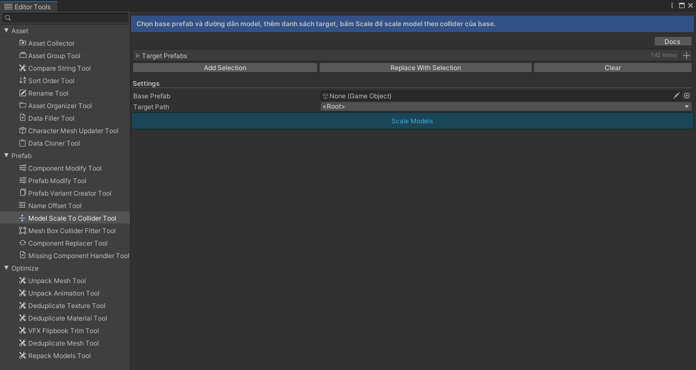

Khi nào dùng
Khi nhập model từ nhiều nguồn với kích thước lệch nhau nhưng gameplay cần một kích thước chuẩn.
Giao diện

Ảnh images/model-scale-to-collider-tool.png chưa chụp.
Các bước
- Chọn base prefab có sẵn collider chuẩn.
- Chọn đường dẫn tới node model.
- Thêm danh sách target.
- Bấm Scale.